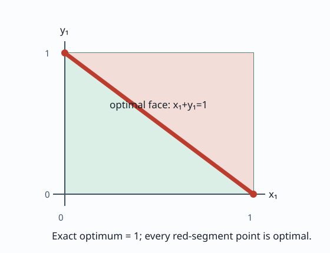

Known initial state x₀=(0,0), dynamics x₁=u₀, control box
[0,1]², terminal constraint x₁+y₁ ≥ 1 inside the unit square,
and objective minimize x₁+y₁.

The red segment is the full optimal terminal-state face. Because x₁=u₀, it also represents the full optimal control relation. The example executable constructs the problem, runs Strategy A, and requires a registry-verified complete-family result. Its printed objective and scope can be checked with the command below.
cmake --build build --target nominal_linear_exact_2d
./build/examples/nominal_linear_exact_2dprofile=strategy-a.nominal-linear-exact-v1
state_dimension=2 control_dimension=2 horizon=1
terminal_constraint=x+y>=1; 0<=x,y<=1
objective=minimize x+y
exact_optimum=1 optimal_face={(x,y): x+y=1, 0<=x,y<=1}
verified_complete_family=true assurance=numerical
Scope: finite binary64 inputs are interpreted as exact dyadic values by the profile verifier. Strategy A's forward geometry and optimization still use numerical providers; this example does not claim validated arithmetic or a performance result.
Source commit: 8b94095edf6b14ba6f3d35e237293e639e48f0aa. Download inputs, observed result and evidence scope (JSON).